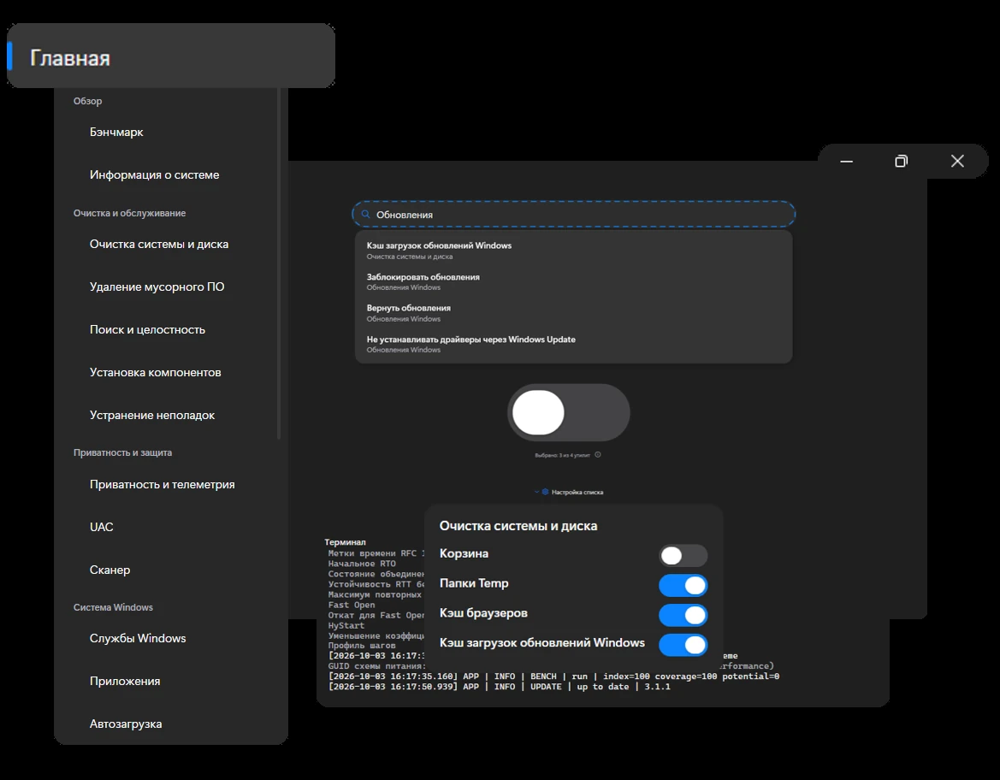

Примени настройки
в один клик
Множество скриптов в одном файле



ЦЕЛЬ
Инструменты, необходимые
для эффективной настройки
Стандартные средства Windows разбросаны по десяткам окон и панелей, а большинство сторонних «оптимизаторов» либо перегружены рекламой и ненужным функционалом, либо выглядят так, будто их не обновляли с Windows 7. Мне нужен был один современный инструмент, который закрывает все повседневные задачи по настройке и обслуживанию системы — без лишнего шума и с привычным уровнем удобства.
Так появился SCU. Это полнофункциональная утилита для Windows с чистым интерфейсом, поддержкой тёмной и светлой темы, русским и английским языками. В одном окне собраны очистка диска и временных файлов, удаление мусорных приложений, управление службами и автозагрузкой, тонкая настройка сети, питания, приватности и интерфейса. Перед любыми изменениями создаются резервные копии и точки восстановления, а дашборд подсказывает, что действительно стоит поправить.
Приложение бесплатное, работает на современном .NET и открыто для доработок. Вы можете взять исходный код, убрать ненужные разделы, добавить свои сценарии или просто пользоваться готовым инструментом, который делает систему быстрее, чище и экономит ваше время.
- Главная
- Обзор
- Бэнчмарк
- Информация о системе
- Очистка и обслуживание
- Очистка системы и диска
- Удаление мусорного ПО
- Поиск и целостность
- Установка компонентов
- Устранение неполадок
- Приватность и защита
- Приватность и телеметрия
- UAC
- Сканер
- Система Windows
- Службы Windows
- Приложения
- Автозагрузка
- Задачи планировщика
- Обновления Windows
- Драйверы
- Поведение и производительность
- Питание, память и CPU
- Сеть
- Интерфейс и проводник
- Ввод, браузер и игры
- Приложение
- Браузер
- AI
- История
- Настройки